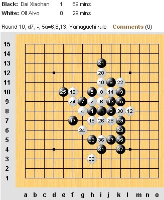
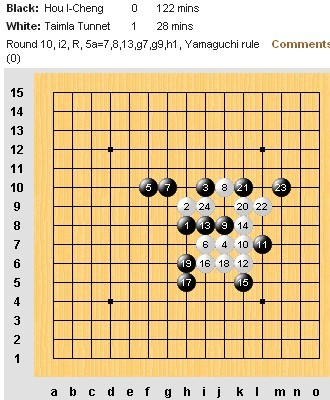
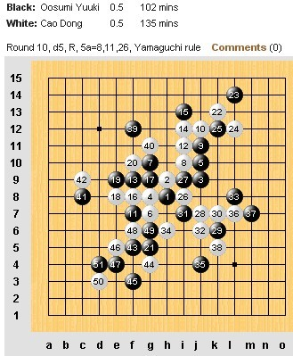
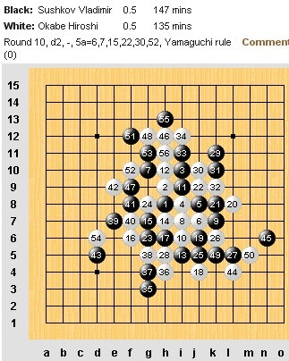
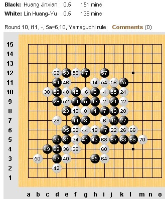
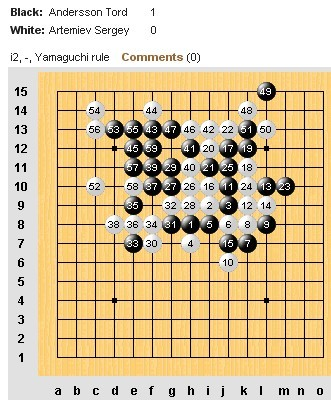
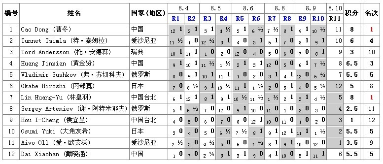

世锦赛第十轮冠军未出，冬林谁是冠军？下午3点见分晓
#1 世锦赛第十轮冠军未出，冬林谁是冠军？下午3点见分晓作者：雨一直下 发表时间：2011-8-10 7:55:10
世锦赛第十轮冠军未出，冬林谁是冠军？下午3点见分晓
第十二届五子棋世界锦标赛A组第十轮，中国选手戴晓涵率先取胜爱沙尼亚爱·欧艾沃(Aivo Oll )。爱沙尼亚特·泰姆拉 (Tunnet Taimla)取胜中华台北侯宜呈 (Hou I-Cheng)。中国选手曹冬战日本大角友希 (Osumi Yuki)；俄罗斯弗·苏切科夫 (Vladimir Sushkov)战日本冈部宽 (Okabe Hiroshi)；中华台北林皇羽战中国黄金贤三对选手相继成和。瑞典托·安德森 (Tord Andersson)最后时刻战胜俄罗斯谢·阿特米耶夫 (Sergey Artemiev)。
比赛还有最后一轮，冠军将在曹冬、林皇羽之间产生，现在双方分别以8分并列前茅。第十一轮曹冬对爱·欧艾沃，林皇羽对弗·苏切科夫将是关注的焦点，林曹双胜就得比小分，恐林占先机。冠军到底是谁让我们北京时间今天下午三点一见分晓。






（转自中国连珠网http://www.rifchina.com/）
［此帖子已被 雨一直下 在 2011-8-10 7:58:35 编辑过］
［ yoda 于 2011-8-10 8:55:37 时花20金币送鲜花一朵］
［ yoda 于 2011-8-10 8:55:45 时花20金币送鲜花一朵］
［ yoda 于 2011-8-10 8:56:00 时花20金币送鲜花一朵］
#2 Re:世锦赛第十轮冠军未出，冬林谁是冠军？下午3点见分晓作者：雨一直下 发表时间：2011-8-10 7:59:56
看看各自积分

（转自励精教室http://www.ljrenju.cn）
#3 Re:世锦赛第十轮冠军未出，冬林谁是冠军？下午3点见分晓作者：游戏人间 发表时间：2011-8-10 8:03:44
起来看了下。。混混的棋下的不错。。曹冬的棋只能说他能和就是下的不错了。黑外围控的非常好，和的很艰难。#4 Re:世锦赛第十轮冠军未出，冬林谁是冠军？下午3点见分晓作者：小丸.net 发表时间：2011-8-10 8:23:10
谁能夺得最后的冠军。。。。三场比赛来决定。。。。竞彩中心已经开通了这三场至关重要的比赛的竞猜。。。最后一次，来赚一把。。。。#5 Re:世锦赛第十轮冠军未出，冬林谁是冠军？下午3点见分晓作者：游戏人间 发表时间：2011-8-10 8:50:50
最后一次倾家荡产的机会。。#6 Re:世锦赛第十轮冠军未出，冬林谁是冠军？下午3点见分晓作者：傀儡 发表时间：2011-8-10 9:06:02
 冬瓜加油，苏切加油！！！
冬瓜加油，苏切加油！！！#7 Re:世锦赛第十轮冠军未出，冬林谁是冠军？下午3点见分晓作者：逆刃 发表时间：2011-8-10 9:29:30
日本人下残月那个5就是有一手，不应该下那个的。。#8 Re:世锦赛第十轮冠军未出，冬林谁是冠军？下午3点见分晓作者：炫飞冰弦 发表时间：2011-8-10 9:35:04
最后一轮了，冬瓜混混小天加油#9 Re:世锦赛第十轮冠军未出，冬林谁是冠军？下午3点见分晓作者：慕容晓文 发表时间：2011-8-10 9:42:48
LIN对目前排前五的其他4人，三盘和棋，另有一盘在最后一轮，赢了除前五之外的其他所有人
而曹冬是2胜2和，含金量更高
呵呵~~~~~~
#10 Re:Re:世锦赛第十轮冠军未出，冬林谁是冠军？下午3点见分晓作者：岑小鱼 发表时间：2011-8-10 11:55:45
引用：
原文由 逆刃 发表于 2011-8-10 9:29:30 :
日本人下残月那个5就是有一手，不应该下那个的。。对于这个13有什么研究么?
之前碰见过一次..不过没有引起注意.....
#11 Re:世锦赛第十轮冠军未出，冬林谁是冠军？下午3点见分晓作者：五子酷 发表时间：2011-8-10 12:06:09
我预测排名，如果对了，大家给我鲜花：
1.曹冬
2.林皇羽
3.黄金贤
4.坦克
5.戴晓涵
6.苏切科夫
7.大角友希
8.冈部宽
9.安德森
10.爱伏
11.阿特耶夫
12.侯宜呈
#12 Re:世锦赛第十轮冠军未出，冬林谁是冠军？下午3点见分晓作者：小元 发表时间：2011-8-10 12:19:50
楼上的排名只猜一轮？#13 Re:世锦赛第十轮冠军未出，冬林谁是冠军？下午3点见分晓作者：五子酷 发表时间：2011-8-10 16:11:49
那你猜猜看，能对几个？#14 Re:世锦赛第十轮冠军未出，冬林谁是冠军？下午3点见分晓作者：五子酷 发表时间：2011-8-10 16:44:12
可惜就把小天猜错了，剩下都对
#15 Re:世锦赛第十轮冠军未出，冬林谁是冠军？下午3点见分晓作者：忧郁的双眼 发表时间：2011-8-10 20:27:21
当时看到第十轮的情况我的心悬着